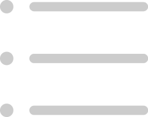

智能辅助驾驶系统
Intelligent Advanced Driver Assistance System
STATUS
{{ rpmValue }}
RPM
Steering mode
Alarm Control
Alarm Sound
Automatic Collision Avoidance Emergency
Handling
SCANNING
BERTHING
AUTO NAVIG
FOLLOW
{{ item.id }}
({{ item.lat }}, {{ item.lon }})
{{ item.angle }}° {{ item.size }}
Route
List

DRAWING...
DRAWING COMPLETED
Target Route
{{ confirmedFollowParams.targetRoute }}
Follow Distance (m)
{{ confirmedFollowParams.distance }}
Follow Bearing (°)
{{ confirmedFollowParams.bearing }}
ZOOM: {{ currentZoom }}
经度: {{ formatCoord(coordsDisplay.lon) }}
纬度: {{ formatCoord(coordsDisplay.lat) }}
Target No.
Longitude
Latitude
Course
Speed (kn)
DCPA (nm)
TCPA (min)
Bearing
{{ t.targetNo }}
{{ t.lon }}
{{ t.lat }}
{{ t.course }}
{{ t.speed }}
{{ t.dcpa }}
{{ t.tcpa }}
{{ t.bearing }}
Set Follow Params
{{ followParams.targetRoute }}
{{ followParams.distance || '' }}
{{ followParams.bearing || '' }}
1
2
3
4
5
6
7
8
9
.
0
{{ saveRouteName || 'Enter route name...' }}
SAVE
Esc
1q
2w
3e
4r
5t
6y
7u
8i
9o
0p
Tab
a
s
d
f
g
h
j
k
l
'"
↵

z
x
c
v
b
n
m
;,
:.
!?
&123
Ctrl
⊞
Alt
中
<
>